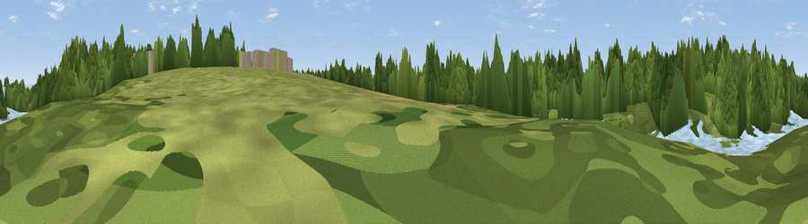

Viewpoint near Lymm
#46181 in England · top 98% of its area beats it · near LymmThe view, rendered

A 360° render of this exact spot computed from the terrain model, tree cover and land cover — summer colours, afternoon light, calibrated against photographs of famous viewpoints. Real trees, hedges and buildings will differ in detail.
The panorama
Grey silhouette: terrain skyline in each direction (720 bearings, Earth curvature and refraction included). Dashed green: skyline with trees (+15 m) and buildings (+8 m) as obstacles. Blue strip: how far the ground is visible on each bearing.
Where the view opens
Wedge length = distance to the farthest visible ground on that bearing (vegetation-aware). Rings at 10, 25 and 50 km.
What fills the view
78% woodland · 11% water · 7% grassland · 3% built-up · 1% cropland
Angular shares of the visible panorama (visual magnitude), not map area. Landscape diversity 0.34 (0–1 Shannon).
Key numbers
More beautiful places nearby
The staircase of upgrades: each row has a higher view potential than everything closer. Driving times are estimates from straight-line distance, calibrated against real road routing — check an actual route before setting out.
| Place | Direction | Drive | Score |
|---|---|---|---|
| Lymm Dam | NNE · 0 km | ~1 min | 15.4 |
| Butchersfield | N · 2 km | ~6 min | 52.9 |
| Viewpoint near Hollins Green | N · 5 km | ~11 min | 60.7 |
| Viewpoint near Stretton | WSW · 7 km | ~14 min | 70.3 |
| Viewpoint near Overton | SW · 18 km | ~32 min | 72.3 |
| Frodsham Hill | WSW · 19 km | ~32 min | 73.4 |
| Beacon Hill | WSW · 19 km | ~32 min | 77.3 |
| White Brow | N · 26 km | ~42 min | 82.9 |
53.37554, -2.48193 · source: osm viewpoint · position refined by local search. Computed location — check access rights before visiting.